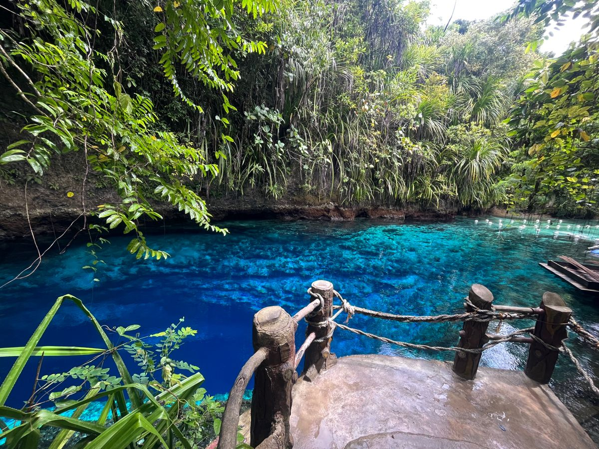
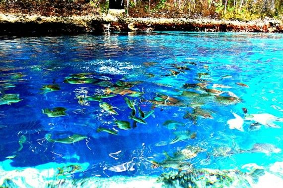
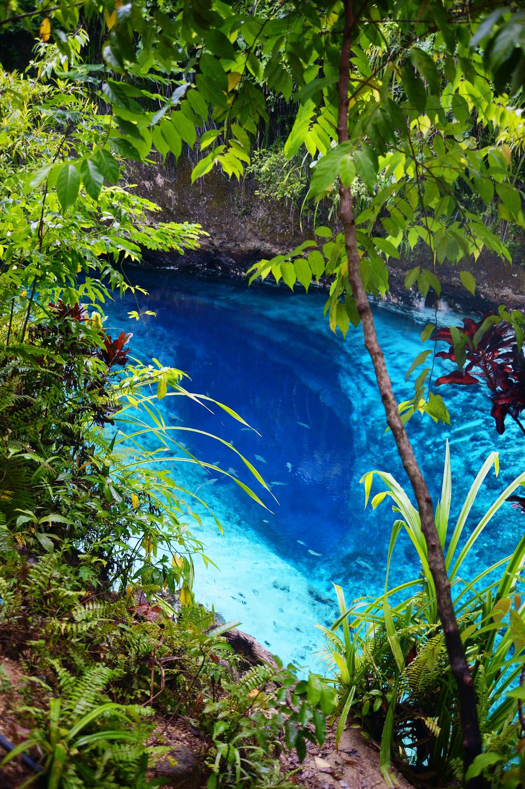

The Hinatuan Enchanted River is a deep spring river located in Barangay Talisay, Hinatuan, Surigao del Sur, Philippines. Famous for its vivid sapphire-blue water and mysterious depth, it is both a natural wonder and a site of local folklore, drawing visitors from around the world to witness its surreal beauty and daily fish-feeding ritual. It flows directly into the Philippine Sea, yet its exact depth remains partially unexplored, adding to its mysterious appeal. The river is relatively short but remarkably deep, with underwater caves believed to contribute to its striking appearance. Surrounded by limestone formations and dense vegetation, the area creates a magical and almost surreal atmosphere. Visitors are often captivated by how the water seems to glow under sunlight.
The river’s calm surface contrasts with its unknown depths, making it both inviting and intriguing. The surrounding environment enhances its beauty, with lush greenery framing the vibrant blue water. Light reflections on the surface create varying shades of blue throughout the day. The clarity of the water allows visitors to see fish swimming beneath the surface with ease. Overall, the Enchanted River stands out as one of the most visually unique natural attractions in the Philippines.


Flowing from an underground cave system into the Philippine Sea, the Enchanted River’s intense blue hue results from a combination of dissolved minerals, sunlight, and exceptional water clarity. The brackish mix of fresh and salt water sustains both marine and freshwater species. Its basin, carved in limestone over millennia, forms a striking natural pool surrounded by lush tropical forest.
Local myths tell of engkanto (nature spirits) and fairies who dropped sapphire and jade into the river, giving it its color. The river’s name was popularized by diplomat-poet Modesto Farolan’s poem Rio Encantado (“Enchanted River”). Each noon, the “Hymn of Hinatuan” plays while caretakers feed the fish—an act said to honor these spirits. The ritual, combined with the river’s unearthly hue, reinforces its reputation as a sacred, enchanted site.
Divers began mapping the Enchanted River’s underwater caverns in 1999, discovering narrow tunnels and hidden chambers beyond 30 meters, though its full extent remains unexplored. To protect its fragile ecosystem, the local government banned swimming in the main lagoon and relocated vendors away from the site. Conservation programs now monitor water quality and limit visitor activity.


Tourists visiting the Enchanted River can participate in a variety of activities that highlight its natural beauty. Swimming in the designated areas allows visitors to experience the cool and refreshing water. Snorkeling provides an opportunity to observe fish and underwater features up close. The daily fish-feeding ritual, accompanied by music, creates a unique and almost magical experience. Photography is highly popular due to the river’s vibrant colors and scenic surroundings.
Visitors also enjoy simply relaxing by the river and taking in its peaceful atmosphere. The surrounding area offers spots for picnics and quiet reflection. Some tourists explore nearby attractions to complement their visit. The combination of natural beauty and cultural elements makes the experience more meaningful. Local guides sometimes share stories about the river’s history and legends. Overall, the activities provide a balance of adventure and relaxation.
The river is open daily from 7 a.m. to 5 p.m. with an entrance fee (₱50–₱100 depending on residency). Visitors may swim only in a designated section, wear life vests, and observe the noon fish-feeding. Boat tours connect to nearby attractions such as Tinuy-an Falls, Sibadan Fish Cage, and the Britania Islands. The best travel period is the dry season, December to May, when the water is clearest and roads are most accessible.
Today, the Hinatuan Enchanted River stands as both a geological marvel and a cultural treasure—a place where science and legend converge in one of the Philippines’ most captivating natural settings.